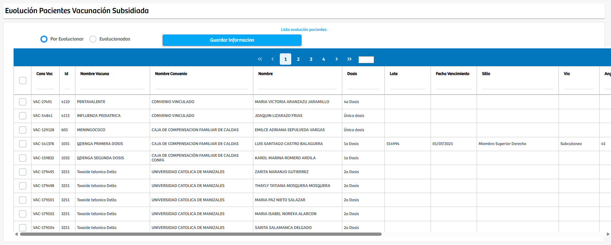
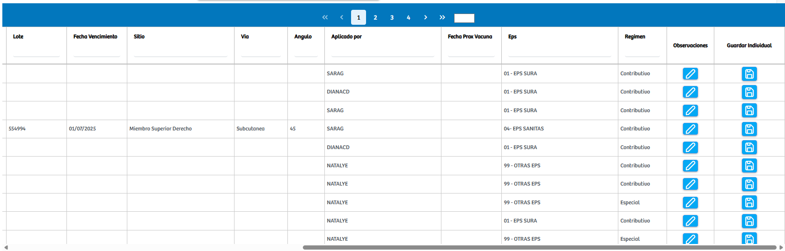

Modulos Sas-Web
Funcionalidades
Evolución Vacunas
El módulo Evolución Vacunas permite gestionar y hacer seguimiento al estado de evolución de los pacientes que ya han recibido una vacuna. Esta vista está diseñada para facilitar el control del proceso posterior a la aplicación, asegurando que cada paciente complete de manera adecuada su periodo de observación y evolución clínica. Al ingresar al módulo, se presentan dos filtros principales: Por evolucionar y Evolucionados, que permiten visualizar los registros según su estado actual dentro del proceso.
En la seccion Por evolucionar, se muestran los pacientes que ya cuentan con la aplicación de una vacuna, pero que aún no han completado el registro de evolución correspondiente. La tabla presenta información detallada como el tipo de vacuna, convenio, dosis, lote, sitio de aplicación, vía, fecha de vencimiento y otros datos clínicos relevantes. Para marcar la evolución de un paciente, el sistema permite seleccionar uno o varios registros mediante casillas de verificación, o bien utilizar el botón individual disponible en cada fila. Una vez seleccionados, el usuario puede hacer clic en el botón Guardar Información, lo que actualiza el estado del paciente y lo traslada automáticamente a la lista de Evolucionados.
En el apartado Evolucionado, se encuentran los registros de pacientes cuya evolución ya fue registrada y guardada. Estos pacientes han completado el proceso de seguimiento posterior a la vacunación. Desde este listado el usuario puede consultar los datos asociados a cada evolución, y mediante los botones de edición disponibles, es posible agregar o modificar las observaciones clínicas, permitiendo completar o actualizar la información cuando sea necesario.
Este módulo también incluye una vista adicional a la que se accede desde la edición individual de un registro. En esta pantalla el usuario puede agregar, actualizar o corregir observaciones, sin modificar otros datos del procedimiento. Esto asegura que el seguimiento clínico posterior a la vacunación quede documentado de manera adecuada, manteniendo trazabilidad y precisión en cada registro.